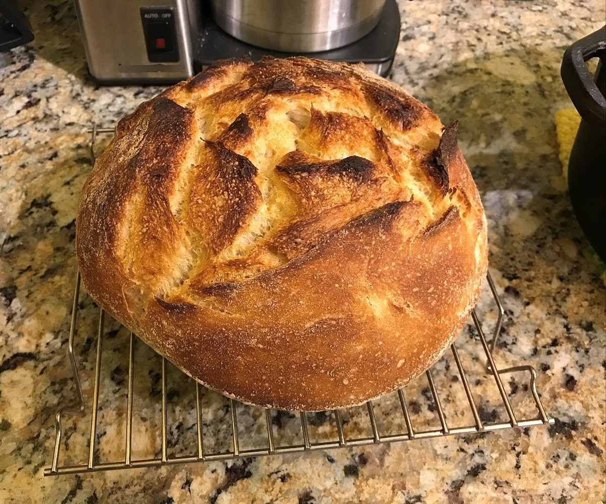
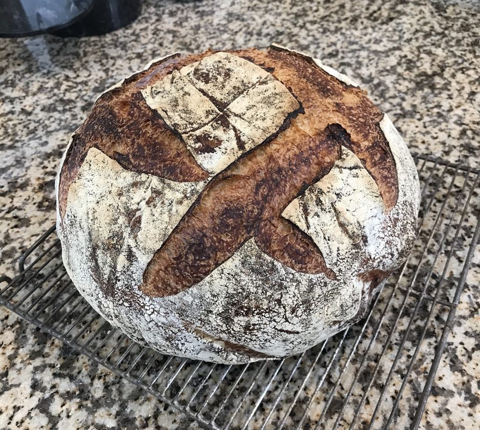

パン屋 / 石川県小松市
ブレッド
ペトロ
石川県小松市のパン屋「ブレッドペトロ」のご案内ページです。営業時間やメニューなど、詳しいことは準備中。まずはInstagramをのぞいてみてください。

制作側の連想
「ブレッド」から、五枚の作業票を思い浮かべた。
店名の由来は分かりません。制作側は「パン」と聞いて、パンづくりの流れを一枚ずつ書き留める作業票を連想しました。そこでこのページは、計量・こねる・発酵・成形・焼成という五枚の作業票に、写真を1枚ずつ添えています。お店の実際の作り方や工程とは関係のない、制作側の連想です。お店の理念や由来とも無関係です。
五枚の作業票
計量 / こねる / 発酵 / 成形 / 焼成
写真は小松市やお店の風景ではありません。国外・撮影地不明のフリー素材のイメージです。
計量作業票 No.1 / 銀紙とバターの写真

銀紙とバター こねる作業票 No.2 / めん棒の写真

めん棒ひとつ 発酵作業票 No.3 / ふくらんだ生地の写真

ふくらんだ生地 成形作業票 No.4 / 結び目の形の写真

結び目の形 焼成作業票 No.5 / クープの入った丸パンの写真

刻まれたクープ
ご案内
お店のこと(確認できたものだけ)
| 所在地 | 石川県小松市矢田野町ホ−１４５−２ |
|---|---|
| 電話 | 0761-41-5455 |
| 営業時間 | 準備中 |
| 定休日 | 準備中 |
| ご予約 | 準備中 |
| 駐車場 | 準備中 |
| SNS | Instagram @bread_petro |